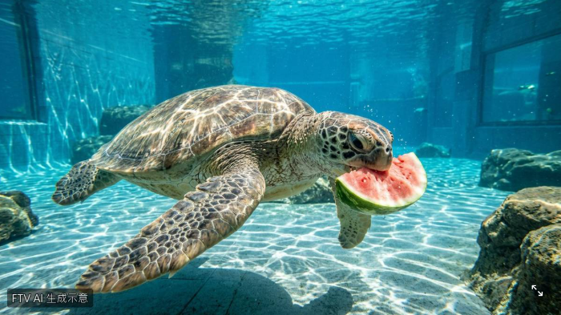

海洋動物吃冰鎮西瓜
中國安徽省合肥市近日面臨持續高溫，當地的合肥海洋世界展開「消暑大作戰」，為海洋動物們準備了各式各樣的冰涼點心，包括魚肉果凍、冰塊以及冰鎮西瓜，幫助牠們安全度過酷暑。
中國安徽省合肥市近日遭受持續高溫肆虐。
為了幫助館內的海洋動物們消暑降溫，合肥海洋世界於週一（2026年8月3日）正式切換為「酷暑防禦模式」，為動物們量身打造了各式各樣的創意消暑良方。
在特製的消暑菜單中，聰明的海豚們開心地享用著特製的「魚肉果凍」與冷凍魚；一旁的企鵝則悠閒地圍著冰塊，一口接一口地品嚐；而慢吞吞的海龜們，則在工作人員的親自餵食下，興奮地大啖冰鎮西瓜與葡萄，模樣相當逗趣可愛。
面對持續不斷的高溫挑戰，合肥海洋世界館方表示，除了提供冰涼的食物外，場館內的溫度控制、水循環以及製冷系統也已經開啟24小時不間斷運轉，確保水溫與環境維持在舒適範圍，讓海洋動物們都能安全且舒適地度過這個炎熱的夏天。

